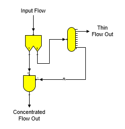
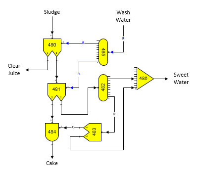

The quantity of diluent flow into the separator can be specified as a ratio of one of the components in the input flow, or to the total quantity of input flow; for example, the diluent flow can be added at a ratio of 0.100 times the quantity of total flow into the separator. The percentage of diluent flow that goes out with output flow #1 is controlled by the value entered, and the remainder goes out with output flow #2. Entries are not necessary for the diluent flow, and if none are made, the diluent flow into the separator will be zero. If the separator doesn't have a diluent input flow, the diluent flow entry fields will be dimmed.
Up to five component separations can be made in a separator station. The "1st" thru "4th" components are given individually; the Other Components entry is for all remaining components. For each separation, a Component must be selected and a Percent value entered. For example, the figure below shows that 50.00% of Dissolved N.S. #1, 50.00% of Dissolved N.S. #2, 90.00% of CaCO3, and 0.0% of all remaining components in the input flow will go out with output flow no. 1 - all of the remaining input flow components will leave with output flow no. 2. If a value is not given for the Other Components entry, then all remaining components that haven't been specified by the 1st thru 4th entries will leave the separator in output flow no. 2.
Color of the output no. 1 and no. 2 flow streams will be dependent on the components in the output flows and the value entered in the Color field. A normal color change due to flow components only is achieved by entering 100.00% for the Color entry. An entry of 100.00% means that all of the agents causing color are equally split between output flows no. 1 and no. 2 depending on the separation of the components. Color can be shifted from output flow no. 1 to output flow no. 2 by using a number smaller than 100%. For example, an entry of 50% means that 50% of the agents causing color that would normally go to output flow no. 1 will instead go to output flow no. 2. Making changes in the Color entry field will not change the component fractions that are split due to the entries for Component and Percent; instead, it simply means that a disproportionate amount of the agents causing color are sent to output flow no. 2 as the flow stream passes through the separator station. Color removal in the station is the difference between 100% and the value entered. For example, if 20% is entered in the Color field, it means that the separator station will cause an 80% removal of the agents causing color from output flow no. 1. Color cannot be removed from pure sucrose, nor from Dissolved N.S. #2 - all color shifting between output flows no. 1 and no. 2 occurs in Dissolved N.S. #1 which is considered to contain all miscellaneous agents that cause color. If output flow no. 1 does not contain any Dissolved N.S. #1 component, then color cannot be shifted from output flow no. 1 to output flow no. 2; hence, no change will occur in the color of the output flow streams regardless of the entry in the Color field.
Solubility function coefficients (see Sucrose Solubility section for ‘a’, ‘b’ & ‘c’ values) for each output flow stream will be the same as the input flow; unless, the diluent flow has different solubility coefficients. If the diluent and input flows have different coefficients, a weight- weighted average will be used for each of the output flow streams. If the flow components of each of the output flows change such that some of the melassigenic substances are reduced in one of the output flows and concentrated in the other, then the solubility function coefficients for each of the output flow streams must be altered to account for the change in solubility. A reactor station can be used to adjust the solubility coefficients for the output flows (see Reactor Properties).
The figure below shows a model of a filter, or press, that uses a separator (no. 340), distributor (no. 341) and blender (no. 342).

The separator station separates all insoluble solids from the input flow to go to its output flow no. 1; hence, all of the liquid in the input flow goes out of the separator in its output flow no. 2 to the distributor. The blender parameters are set to blend a portion of the liquid back into the insoluble solid flow, and the port 1 input flow for the blender is a required flow. The blender input parameters are set to control the % dry substance (%DS) of the concentrated flow out and all remaining liquid flow leaves the distributor without any of the insoluble solid material that was contained in the input flow. Hence, regardless of the input flow quantity, or characteristics, the concentrated flow out of the blender will have a set %DS.

The above model shows a vacuum filter that uses three separators (nos. 480, 481 & 483), two distributors (nos. 482 & 485), one blender (no. 484) and one receiver (no. 486). The first separator (no. 480) is for the first wash in the vacuum filter when juice is filtered and some wash water is used for the filtering. Note that diluent flow into the separator is a required flow. The second separator station (no. 481) is used for the cake wash with diluent wash flow from the distributor station no. 485. All of the insoluble solids flow out output flow no. 2 of the separator to the blender station where they are blended with some of the sweet water to produce cake % moisture that agrees with actual operating data. Separator station no. 483 is used to adjust the amount of sugar in the sweet water that is blended back into the insoluble solids in the blender to give a percent sugar content that agrees with actual data. Input data for the separator station no. 483 is adjusted for dissolved sucrose in the output flow no. 1 of the separator. Sweet water that is not used in the blender station no. 484 is combined with sweet water leaving the separator (no. 481) in the receiver station no. 486 to make up the total sweet water leaving the vacuum filter. Note that the required blend flow from the blender station no. 484 causes the input flow to the separator station no. 483 to become a required flow. The input flow to the separator will be a required flow if either one of the output flows is required. Sugars will give a warning message if both output flows from a separator are made required - a condition that cannot be satisfied. Also, because both output flows from the distributor station no. 485 are required, the input flow to the distributor is required. Entry values for the separator stations and the blender are adjusted to give a performance for the model that agrees with actual process data. No input data (other than their names) is required for the distributor, or receiver stations.